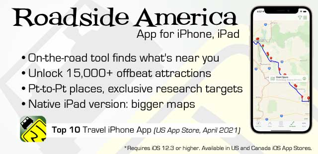
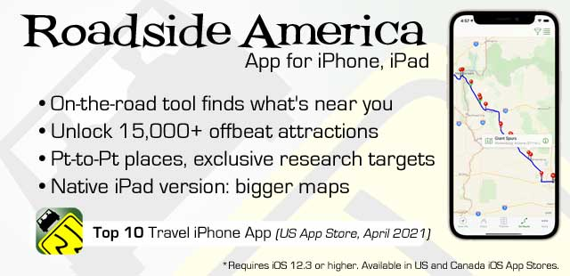

for iPhone and iPad: Roadside America
 

About our App
Our handy and amusing road trip tool guides you to the crazy places you've read about here, and also gives access to the "research" targets of potentially great places to explore.
Maps, directions, photos, stories and tips. Find and filter recommendations between two points. Save places to share and view on your compatible iPhone and iPad.
Requires iOS 12.3 and higher. Basic full feature app: $2.99 for 1 region of 7; optional in-app purchase: $6.99 more for all remaining regions, or $1.99/ea.region a la carte.